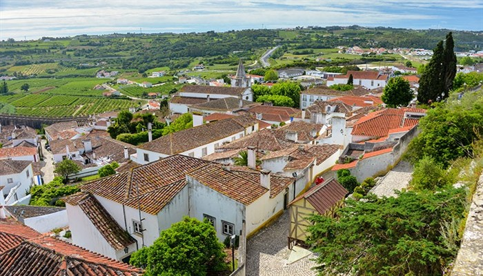

Portekiz’in batı bölgesinde bir tepeye yerleşmiş olan Obidos’un etrafı bir sur ile çevrilmiş. Surun dışında şehir içinde bulunan muhteşem ortaçağ kalesi ve tarihi Obidos Meydanı şehrin ana temasını oluşturuyor. Bu bölgeyi yürüyerek keşfetmek en doğru ve kolay seçim olacaktır çünkü bir labirenti andıran dar örme taş sokakları hissetmenin en güzel yolu bu. Kalabalık meydanlar, güzel dükkânlar ve camlarında rengârenk çiçekler bulunan beyaz evleri ile ziyaretçileri büyüleyen bir şehir.
Obidos, 3,100 nüfusa sahip, Portekiz'in merkezinde bir kasabadır. 1148 yılında Portekiz'in ilk kralı tarafından Endülüs Devleti'nden alınmıştır (Eşine düğün hediyesi olarak vermiştir ki bu daha sonrakiler için bir gelenek halini aldı). Bugünlerde ise, Portekiz'in merkezinde iyi korunmuş bir Ortaçağ kasabası.
POrtaçağ'dan kalma şehir duvarları tarafından çevrelenmiş kasabada ve Moorish Kalesi, Obidos'da görülmesi gereken en önemli yerlerden biridir. Kasabanın yüksek noktalarından baktığınızda üzüm bağları ve çiftliklerden oluşan manzara, tamamen muazzam bir görüntü sunar. Kasabanın içinde dar sokaklarına sıralanmış beyaz ve balkonlarında çiçekler sarkan evlerle karşılaşacaksınız. Rua Direita Caddesi, seramik ve nakış işleri gibi hediyelik eşya alabileceğiniz küçük dükkanlara sahip.